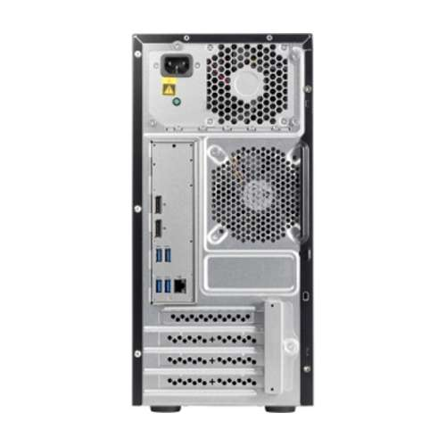
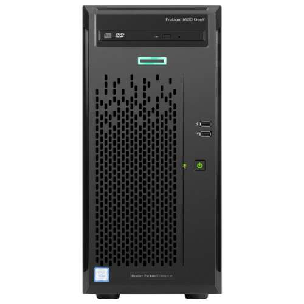

media
media is a server hosted at the shop that houses drives which are then shared via ftp, http and rsync. If you're a user and just want to browse or download files, please see the user section.
Hardware specs
This was orignally purchsed from TiderDirect and it's title is "HPE ProLiant ML10 Gen9 Tower Server - Intel i3-6100 Dual-Core 3.7GHz Processor, 4GB DDR4 Memory, DVD-RW, No OS, Gigabit Ethernet, USB 3.0 - 866965-S01". Otherwise, specs are:
- Intel 6100 Dual Core i3 3.7GHz
- 4GB DDR4 (4 slots, 64GB max)
- SATA with RAID Levels 0,1,5,10
- Up to 5 SATA Drives Supported 5
- 15.8" x 6.9" x 14.5"
See detailed PDF as well.
 
OS
Media runs a vanilla install of Ubuntu 19.04. Give it the static IP of 10.0.40.19 (gateway 10.0.40.1, subnet 255.255.255.0, dns 10.0.40.66) and make sure that the pi hole has an entry in it's /etc/hosts file so that it resolve locally in the shop.
Drives
There are currently 4 drives: a boot and three data drives. The data drives all mount to /var/ftp/pub thusly:
ubuntu@files:~$ grep -v \# /etc/fstab
UUID=0c6017b8-2df7-4dfa-bfb3-0ce05ac07695 / ext4 errors=remount-ro 0 1
UUID=2550-3646 /boot/efi vfat umask=0077 0 1
/swapfile none swap sw 0 0
/dev/sdc2 /var/ftp/pub/infocon.org ntfs ro 0 0
/dev/sdd2 /var/ftp/pub/tables1-2 ntfs ro 0 0
/dev/sdb2 /var/ftp/pub/tables2-2 ntfs ro 0 0
Apache
Apache is installed (sudo install apache2) and then the default vhost is edited to point to
/var/ftp and browsing is enabled:
grep -v \# /etc/apache2/sites-enabled/000-default.conf
<VirtualHost *:80>
ServerAdmin webmaster@localhost
DocumentRoot /var/ftp
ErrorLog ${APACHE_LOG_DIR}/error.log
CustomLog ${APACHE_LOG_DIR}/access.log combined
<Directory "/var/ftp">
Options Indexes MultiViews
AllowOverride None
Require all granted
</Directory>
</VirtualHost>
FTP
TBD - Muffins to put a sentance or three about set up here ;)
rssh chrooted setup
rssh allows for just rsync/scp/sftp access with out letting the user log in with SSH.
To set rssh up, first make sure that prereqs are
installed (apt-get install openssh-server openssh-sftp-server ssh-import-id ncurses-term) and then
install rssh directly from this pacakage
(dpkg -i rssh_2.3.4-7ubuntu0.1_amd64.deb). The reason for
this is 19.04, at the time of publishing, didn't have the rssh package in it's repos, so we
add it manually via dpkg
Add a media user (useradd media) and specify a password of media. Then set their shell to be rssh in /etc/passwd. Note User ID (1001)
may differ, that's unimportant:
media:x:1001:1001:,,,:/home/media:/usr/bin/rssh
Remove /home/media and make it a symlink to the FTP dir (ln -s /var/ftp /home/media).
Finally, update the /etc/rssh.conf to allow scp, sftp, rsync and enable the media user:
grep -v \# /etc/rssh.conf
logfacility = LOG_USER
allowscp
allowsftp
allowrsync
umask = 022
user=media:022:100110: